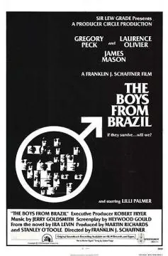

The genetics
The film is built on cloning, but its real subject is nature versus nurture. Mengele knows that identical genes are not enough to make another Hitler, so he places the boys in families like Hitler's own: an older civil-servant father and a younger, doting mother, echoing Alois Hitler, a customs official over twenty years older than his wife Klara. He then arranges for each father to be killed at 65, the age at which Alois died, when Adolf was 13. The plot is therefore an explicit, if fictional, experiment on the relative weight of heredity and environment, and Lieberman's refusal to have the boys killed rests on the same idea: they are not condemned by their genes. Gregory Peck's Mengele is a fanatical Nazi scientist working in exile. The real Mengele, a physician with a doctorate in anthropology who assisted the geneticist Otmar von Verschuer, experimented on twins at Auschwitz and lived in hiding in South America until his death in 1979. Cloning from an adult cell was first achieved in a mammal with Dolly the sheep, born in 1996.
The story
In Paraguay, young Barry Kohler spies on a meeting of fugitive Nazis at which Dr. Josef Mengele orders the murder, over two years, of 94 civil servants aged around 65 in Western Europe and North America. Kohler is killed while telephoning Ezra Lieberman, a veteran Nazi hunter in Vienna. Lieberman investigates the deaths and finds that each victim had an adopted 13-year-old son and that the boys look identical. After consulting a biologist, he concludes that they are clones of Adolf Hitler, created by Mengele from a single sample and placed with families resembling Hitler's own. Mengele's backers abandon the project, but he travels to Pennsylvania and kills one more father, Henry Wheelock. When Lieberman arrives, Mengele wounds him but is killed by the family's Dobermans, set on him by the boy, Bobby. Lieberman then burns Mengele's list of the 94 boys, refusing to let innocent children be hunted down.